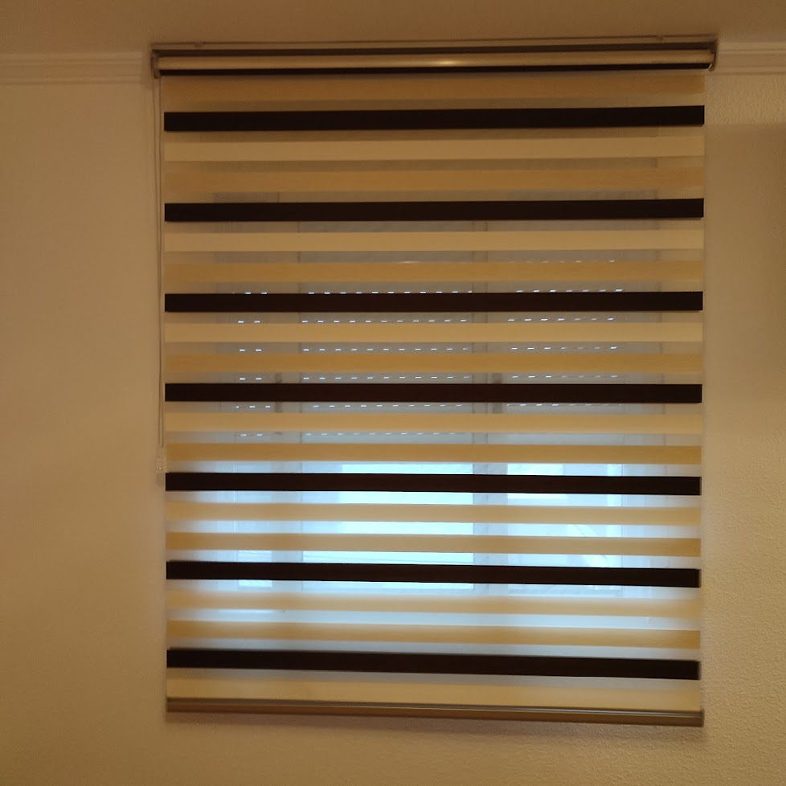
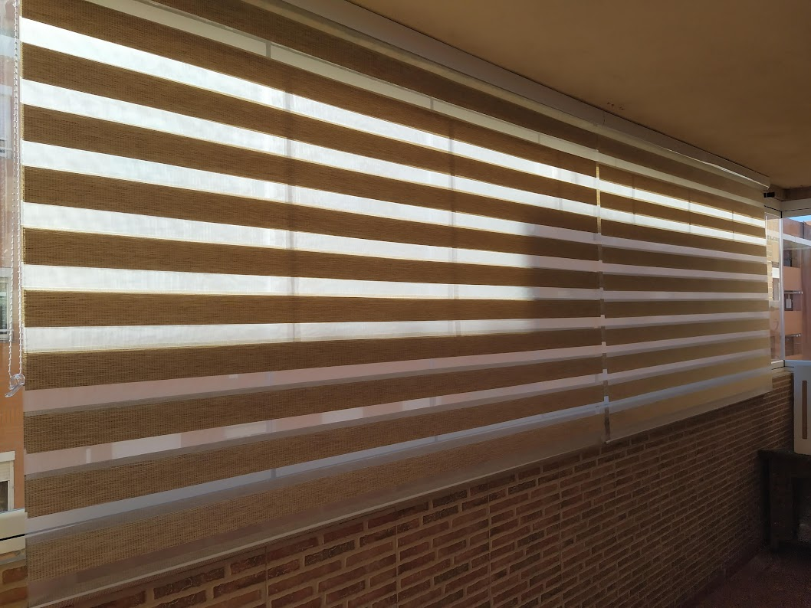
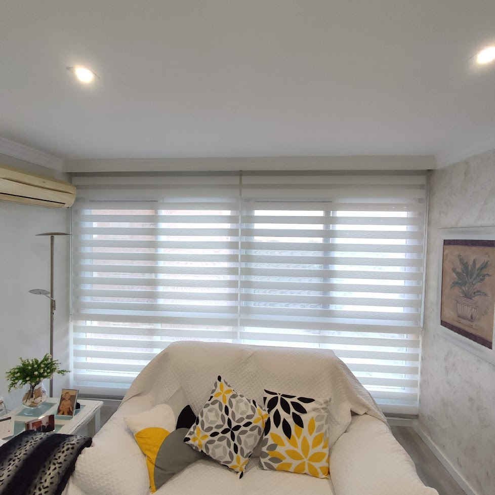
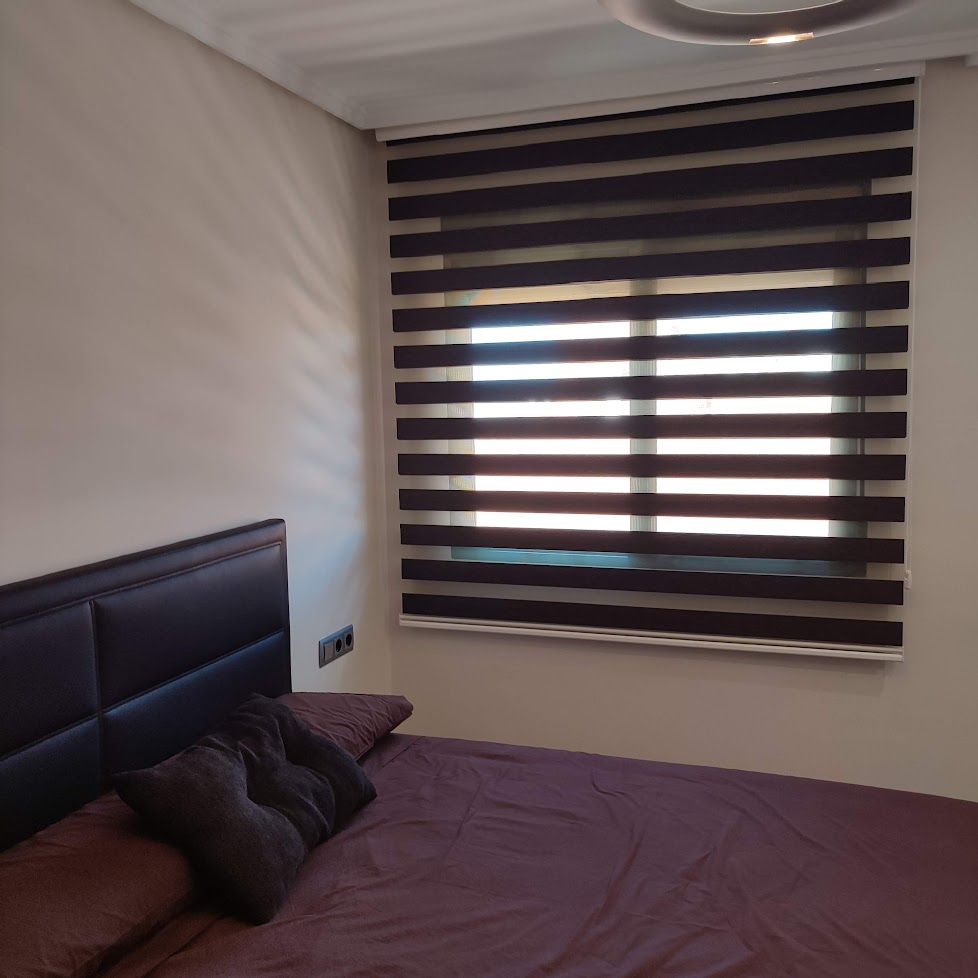

Estores dia-noche
Control de luz dual para regular privacidad y entrada de sol.
Que ofrecemos
El sistema dia y noche alterna bandas traslucidas y opacas para graduar entrada de luz sin subir completamente el estor. Es una opcion muy versatil para salones y dormitorios.
Su funcionamiento permite pasar de privacidad a maxima luz en segundos, con una imagen actual y ligera.
Proceso de trabajo
Ajustamos ancho, caida y mecanismo para que el alineado de bandas sea preciso. Podemos integrar accionamiento manual o motorizado segun el uso diario del espacio.
Galeria de estores dia y noche



